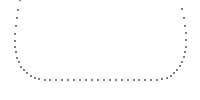
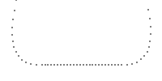

PathPercent QML Type
Manipulates the way a path is interpreted. More...
| Import Statement: | import QtQuick |
Properties
- value : real
Detailed Description
PathPercent allows you to manipulate the spacing between items on a PathView's path. You can use it to bunch together items on part of the path, and spread them out on other parts of the path.
The examples below show the normal distribution of items along a path compared to a distribution which places 50% of the items along the PathLine section of the path.
 | PathView { // ... Path { startX: 20; startY: 0 PathQuad { x: 50; y: 80; controlX: 0; controlY: 80 } PathLine { x: 150; y: 80 } PathQuad { x: 180; y: 0; controlX: 200; controlY: 80 } } } |
 | PathView { // ... Path { startX: 20; startY: 0 PathQuad { x: 50; y: 80; controlX: 0; controlY: 80 } PathPercent { value: 0.25 } PathLine { x: 150; y: 80 } PathPercent { value: 0.75 } PathQuad { x: 180; y: 0; controlX: 200; controlY: 80 } PathPercent { value: 1 } } } |
See also Path.
Property Documentation
value : real |
The proportion of items that should be laid out up to this point.
This value should always be higher than the last value specified by a PathPercent at a previous position in the Path.
In the following example we have a Path made up of three PathLines. Normally, the items of the PathView would be laid out equally along this path, with an equal number of items per line segment. PathPercent allows us to specify that the first and third lines should each hold 10% of the laid out items, while the second line should hold the remaining 80%.
PathView { // ... Path { startX: 0; startY: 0 PathLine { x:100; y: 0; } PathPercent { value: 0.1 } PathLine { x: 100; y: 100 } PathPercent { value: 0.9 } PathLine { x: 100; y: 0 } PathPercent { value: 1 } } }